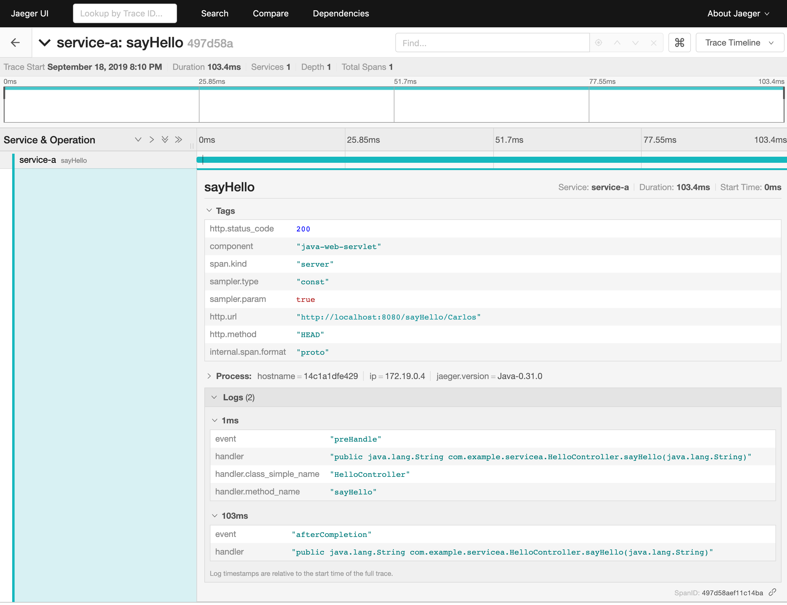
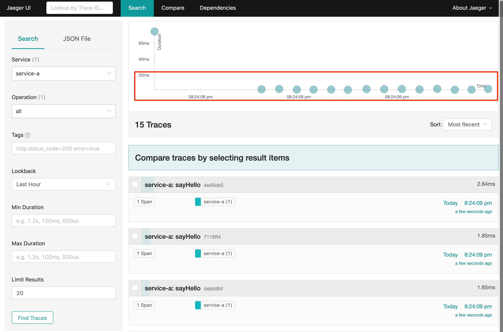
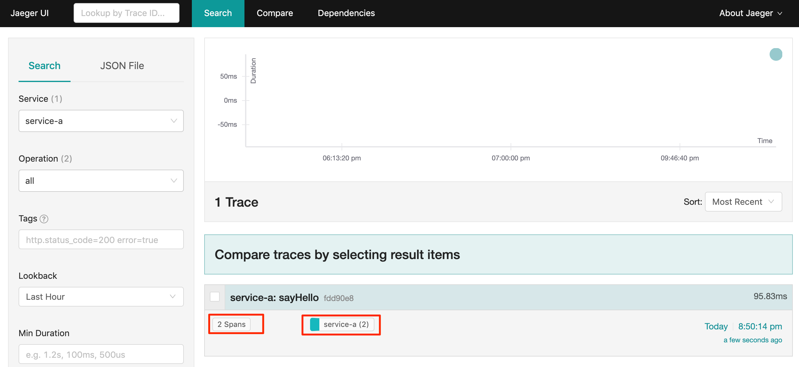
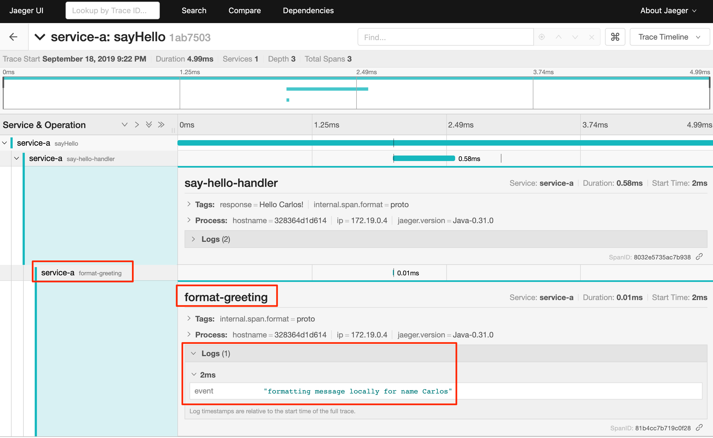
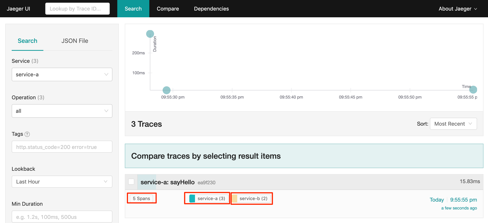
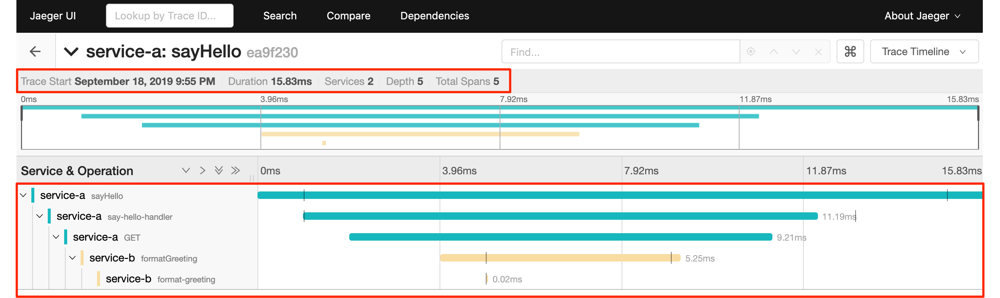
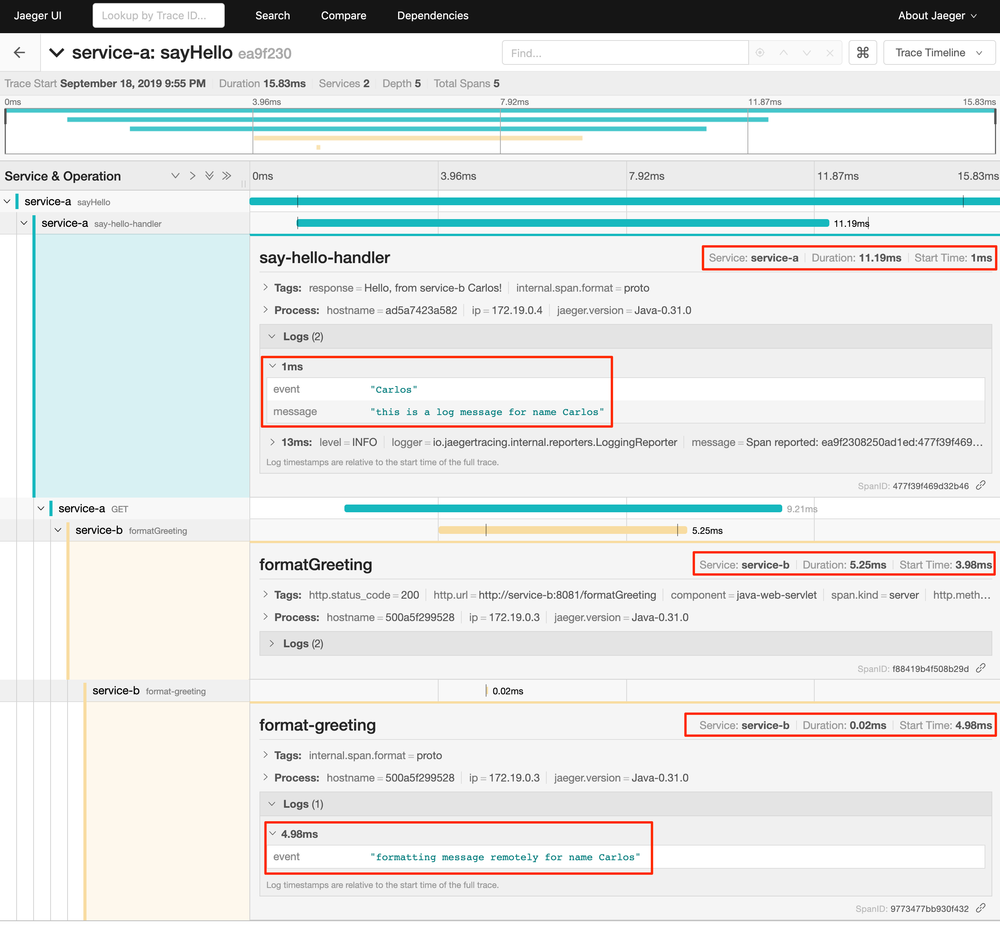
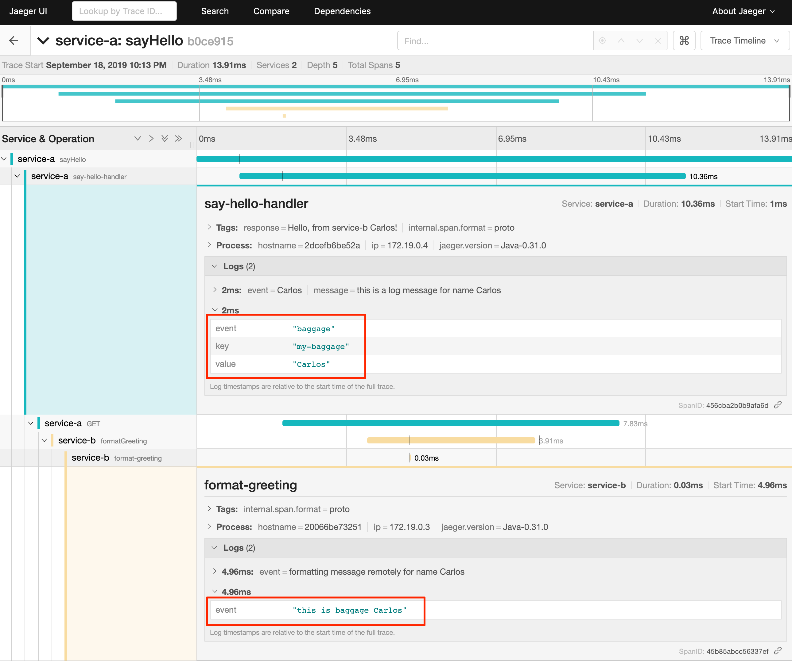
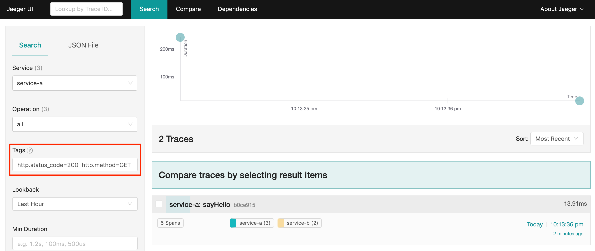

Distributing Tracing Lab - Java
Prerequisites
-
Connection to the internet (docker.io, github.com, maven repo, npm registry)
-
Code Editor
-
I recommend VSCode
-
General Instructions
-
Clone the git repository
git clone https://github.com/ibm-cloud-architecture/learning-distributed-tracing-101.git -
Change to the lab directory
cd lab-jaeger-java/solutionThe solution to the lab is located in the directory
lab-jaeger-java/solutiondocker-compose is already configured to run Jaeger
In case that stopping docker-compose doesn’t work with
Ctrl-Cyou can stop usingdocker-compose stop
Test your environment
-
Change directory to the lab:
cd lab-jaeger-java -
Test the service without tracing enable
docker-compose build docker-compose up -
Try the service
curl http://localhost:8080/sayHello/Carlos Hello Carlos!
Add client libraries
-
Add the tracing client library for the java
service-a, edit the fileservice-a/pom.xmland add the dependenceies foropentracing-api,opentracing-spring-cloud-starter, andjaeger-clientThepom.xmlsection should look like the following:<dependency> <groupId>io.opentracing</groupId> <artifactId>opentracing-api</artifactId> <version>0.31.0</version> </dependency> <dependency> <groupId>io.opentracing.contrib</groupId> <artifactId>opentracing-spring-cloud-starter</artifactId> <version>0.1.13</version> </dependency> <dependency> <groupId>io.jaegertracing</groupId> <artifactId>jaeger-client</artifactId> <version>0.31.0</version> </dependency>
Tracing every http request
-
Add A Bean to initialized the Tracer in the main Class in the file
src/main/java/com/example/servicea/DemoApplication.java@Bean public io.opentracing.Tracer initTracer() { SamplerConfiguration samplerConfig = new SamplerConfiguration().withType("const").withParam(1); ReporterConfiguration reporterConfig = ReporterConfiguration.fromEnv().withLogSpans(true); return Configuration.fromEnv("service-a").withSampler(samplerConfig).withReporter(reporterConfig).getTracer(); } -
Add the imports for jaegertracing in the file
src/main/java/com/example/servicea/DemoApplication.javaimport io.jaegertracing.Configuration; import io.jaegertracing.Configuration.ReporterConfiguration; import io.jaegertracing.Configuration.SamplerConfiguration; -
Build and run the service. If docker-compose is already running in the terminal enter
Ctrl+Cto exit and stop the containers.docker-compose build docker-compose up -
Call the same API endpoint, but now is instrumented with tracing
curl http://localhost:8080/sayHello/Carlos Hello Carlos! -
Open the Jaeger UI using the web browser
open http://localhost:16686/jaeger -
Select the Service
service-afrom the drop-down options and clickFind Traces
-
Click on one of the traces, then expand the trace’s
TagsandLogs. You should see information about the http request such ashttp.methodset toGETandhttp.status_codeset to200. The Logs section have two logs one withpreHandleand the final logafterCompletionthis gives you how much time the request took to be processed by your service business logic. In this example it took8ms.
-
Force an error in the service by calling the
/errorendpoint.curl http://localhost:8080/error -I HTTP/1.1 500 -
Click
Find Tracesnow it should show a trace with the error endpoint.
-
Click on the trace with the
/error, then expand the trace’sTagsandLogs. You should see information about the trace such as thehttp.status_codese to500.
Finding slow http requests
In the service-a we have the API endpoint /sayHello, we used this endpoint in the previous section but called it only once. This endpoint has some strange behavior that not all responses are fast, very often the response is slow 100ms.
-
Stop docker-compose with
Ctrl+Cand start it again.docker-compose up -
Run the following code to call the API multiple times or open the URL endpoint http://localhost:8080/sayHello/Carlos on the web browser and click refresh multiple time.
i=0; while [ $i -lt 15 ]; do curl http://localhost:8080/sayHello/Carlos -I -s | head -n 1; i=$((i+1)); done; -
Open the Jaeger UI using the web browser
open http://localhost:16686/jaeger -
Select the Service
service-afrom the drop-down options and clickFind Traces
In the picture above, you can see a timeline graph with each trace represented with a circle, in this case, we have 15 traces in the result set when we clicked
Find Traces. Some traces are taking approximately 100ms and others are taking approximately 2ms. You can see the pattern that only every 3rd request the response is slow. When troubleshooting we are interested first on the slowest requests, you can click on one of the traces on the graph, or you can sort in the table byLongest First. -
Select the trace that took the longest time 103ms, expand all the information for the single span operation
/sayHelloincluding tags and logs. -
The handler has a sleep step in the method
sayHellothat delays the response every 3rd request. Open the filesrc/main/java/com/example/servicea/HelloController.javaand locate the culprit code.// simulate a slow request every 3 requests try { if (counter++ % 3 == 0) { Thread.sleep(100); } } catch (InterruptedException e) { // TODO Auto-generated catch block e.printStackTrace(); } -
Remove the
try/catchblock and save the fileHelloController.java. -
Build and run the service. If docker-compose is already running in the terminal enter
Ctrl+Cto exit and stop the containers.docker-compose build docker-compose up -
Run again the following code to call the API multiple times or open the URL endpoint http://localhost:8080/sayHello/Carlos on the web browser and click refresh multiple time.
i=0; while [ $i -lt 15 ]; do curl http://localhost:8080/sayHello/Carlos -I -s | head -n 1; i=$((i+1)); done; -
Open the Jaeger UI using the web browser
open http://localhost:16686/jaeger -
Select the Service
service-afrom the drop-down options and clickFind TracesYou can see now that all http requests are fast and the problem is fixed
Cloud Native applications can be composed of microservices and each microservice handling multiple endpoints. Having the ability to have observability allows to narrow down to a specific service, and whithin that service a specific endpoint having problems, starting with a single trace and span you can increase the observability of your applications.
Tracing an http handler
In the previous example, we were able to identify the endpoint /sayHello as one of interest in our service. Let’s see how can we add tracing instrumentation to the function that is handling this endpoint.
-
Add the following imports at the top of the file
HelloController.javaimport io.opentracing.Scope; import io.opentracing.Span; import io.opentracing.Tracer; -
In the class
HelloControlleradd the following Autowire to have access to the global tracer@Autowired private Tracer tracer; -
Locate the method
sayHelloand and wrap the code in a try with a scope, this will create a new child span.public String sayHello(@PathVariable String name) { try (Scope scope = tracer.buildSpan("say-hello-handler").startActive(true)) { String response = formatGreeting(name); return response; } } -
Get a reference to the new child span
say-hello-handlerusing the methodscope.span()public String sayHello(@PathVariable String name) { try (Scope scope = tracer.buildSpan("say-hello-handler").startActive(true)) { Span span = scope.span(); String response = formatGreeting(name); return response; } } -
The opentracing API supports the method
logyou can log an event with a name and an object. Add a log to the span with a message that contains the value of the name.public String sayHello(@PathVariable String name) { try (Scope scope = tracer.buildSpan("say-hello-handler").startActive(true)) { Span span = scope.span(); Map<String, String> fields = new LinkedHashMap<>(); fields.put("event", name); fields.put("message", "this is a log message for name " + name); span.log(fields); // you can also log a string instead of a map, key=event value=<stringvalue> // span.log("this is a log message for name " + name); String response = formatGreeting(name); return response; } } -
The opentracing API supports the method
setTagyou can tag the span with a key and any value. Add a tag that contains the response, in normal use cases you would not log the entire response and instead key values that are useful for later searching for spans. Since we are usingtruein.startActive(true)there is no need to call explicitspan.finish().public String sayHello(@PathVariable String name) { try (Scope scope = tracer.buildSpan("say-hello-handler").startActive(true)) { Span span = scope.span(); Map<String, String> fields = new LinkedHashMap<>(); fields.put("event", name); fields.put("message", "this is a log message for name " + name); span.log(fields); // you can also log a string instead of a map, key=event value=<stringvalue> // span.log("this is a log message for name " + name); String response = formatGreeting(name); span.setTag("response", response); return response; } } -
Build and run the service. If docker-compose is already running in the terminal enter
Ctrl+Cto exit and stop the containers.docker-compose build docker-compose up -
Call the API endpoint.
curl http://localhost:8080/sayHello/Carlos Hello Carlos! -
Open the Jaeger UI using the web browser
open http://localhost:16686/jaeger -
Select the Service
service-afrom the drop-down options and clickFind TracesNotice in the result items table, for the trace item that the trace indicates that there are a total of two spans
2 Spansand that service-a contains two spansservice-a (2) -
Click the trace, expand the spans
say-hello, and then expand theTagsandLogssections.
Notice in the Tags section the tag is located with key
nameand the string valueHello Carlos!. Notice in the Logs section the log event with the namenameand the messagethis is a log message for name Carlos
Tracing a function
The http handler usually calls other functions to perform the business logic, when calling another function within the same service you can create a child span.
-
The
sayHellohandler calls the functionformatGreetingto process the inputname. In the methodformatGreetingcreate a new span usingtracer.buildSpanand name the spanformat-greeting.private String formatGreeting(String name) { try (Scope scope = tracer.buildSpan("format-greeting").startActive(true)) { Span span = scope.span(); span.log("formatting message locally for name " + name); String response = "Hello " + name + "!"; return response; } } -
Build and run the service. If docker-compose is already running in the terminal enter
Ctrl+Cto exit and stop the containers.docker-compose build docker-compose up -
Call the API endpoint.
curl http://localhost:8080/sayHello/Carlos Hello Carlos! -
Open the Jaeger UI using the web browser
open http://localhost:16686/jaeger -
Select the Service
service-afrom the drop-down options and clickFind Traces
Notice that the trace now contains three spans.
-
Click the trace, expand the spans
say-helloandformat-greeting, and then expand theLogssections.Notice the cascading effect between the three spans, the span
format-greetingcontains the messageformatting message locally for name Carlosthat we instrumented.
Distributing Tracing
You can have a single trace that goes across multiple services, this allows to distribute tracing and better observability on the interactions between services.
In the previous example, we instrumented a single service service-a, and created span when calling a local function to format the greeting message.
For the following example, we are going to use a remote service service-b to format the message, and returning the formatted greeting message to the http client.
-
In the file
HelloController.javalocate the handler functionsayHelloand replace the function callformatGreeting(name)withformatGreetingRemote(name).public String sayHello(@PathVariable String name) { try (Scope scope = tracer.buildSpan("say-hello-handler").startActive(true)) { Span span = scope.span(); Map<String, String> fields = new LinkedHashMap<>(); fields.put("event", name); fields.put("message", "this is a log message for name " + name); span.log(fields); String response = formatGreetingRemote(name); span.setTag("response", response); return response; } } -
In the method
formatGreetingRemotethe http requestis automatically instrumented, and the tracing headers inserted when calling the remote serviceservice-bendpoint/formatGreeting.private String formatGreetingRemote(String name) { String serviceName = System.getenv("SERVICE_FORMATTER"); if (serviceName == null) { serviceName = "localhost"; } String urlPath = "http://" + serviceName + ":8081/formatGreeting"; URI uri = UriComponentsBuilder // .fromHttpUrl(urlPath) // .queryParam("name", name).build(Collections.emptyMap()); ResponseEntity<String> response = restTemplate.getForEntity(uri, String.class); return response.getBody(); } -
The service
service-bis already instrumented to trace every http request using the same procedure Trace every http request that we did for serviceservice-a. -
Import at the top of the file
src/main/java/com/example/serviceb/FormatController.javatheopentracinglibraries.import io.opentracing.Scope; import io.opentracing.Span; import io.opentracing.Tracer; -
In the class
FormatControlleradd the following Autowire to have access to the global tracer@Autowired private Tracer tracer; -
Located the http handler function
formatGreetingin the fileFormatController.javapublic String formatGreeting(@RequestParam String name) { String response = "Hello, from service-b " + name + "!"; return response; } -
Create a new child span using the parent span located in the
reqobject as context. This will allow the trace to have an additional child span. Use the functiontracer.startSpanand name the spanformat-greeting.public String formatGreeting(@RequestParam String name) { try (Scope scope = tracer.buildSpan("format-greeting").startActive(true)) { Span span = scope.span(); String response = "Hello, from service-b " + name + "!"; return response; } } -
Add a log event to the new span using the method
span.log.public String formatGreeting(@RequestParam String name) { try (Scope scope = tracer.buildSpan("format-greeting").startActive(true)) { Span span = scope.span(); span.log("formatting message remotely for name " + name); String response = "Hello, from service-b " + name + "!"; return response; } } -
Build and run the service. If docker-compose is already running in the terminal enter
Ctrl+Cto exit and stop the containers.docker-compose build docker-compose up -
Call the API endpoint.
curl http://localhost:8080/sayHello/Carlos Hello Carlos! -
Open the Jaeger UI using the web browser
open http://localhost:16686/jaeger -
Select the Service
service-afrom the drop-down options and clickFind TracesNotice that the trace contains a total of four spans
5 Spanstwo forservice-a(3)and two forservice-b(2) -
Click the trace to drill down to get more details.
Notice in the top section, the summary which includes the
Trace Start,Duration: 16ms,Services: 2,Depth: 5andTotal Spans: 5.Notice the bottom section on how the total duration of 16ms is broken down per span, and at which time each span started and ended. You can see that the time spent in
service-bwas 5ms, meaning that for this single http requestservice-aspent 11ms andservice-bspent 5ms. -
Expand the
Logssections for both spanssay-hellofromservice-aandformat-greetingfromservice-b.Notice on the right side, each span has a summary each with the associated
Service,Duration, andStart Time. TheStart Timeof a span marks the end time from the previous span.Notice the time for the first log message
this is a log message for name Carlosinservice-ais of 1ms, this means this log event happened 1ms after the trace started.Notice the time for the second log message
formatting message remotely for name Carlosinservice-bis of 4.98ms, this means this log event happened 4.98ms after the trace started inservice-a.Is very useful to see the log events we instrumented in our endpoint handlers across services in this manner because it provides full observability of the lifecycle of the http request across multiple services.
Baggage propagation
Imagine a scenario where you want to redirect all Safari users to a specific version of a service using theUser-Agent HTTP header. This is useful in canary deployments when a new version is rolled out for a specific subset of users. However, the header is present only at the first service. If the routing rule is for a service lower in a call graph then the header has to be propagated through all intermediate services. This is a great use-case for distributed context propagation which is a feature of many tracing systems.
Baggage items are key:value string pairs that apply to the given Span, its SpanContext, and all Spans which directly or transitively reference the local Span. That is, baggage items propagate in-band along with the trace itself.
Baggage items enable powerful functionality given a full-stack OpenTracing integration (for example, arbitrary application data from a mobile app can make it, transparently, all the way into the depths of a storage system), and with it some powerful costs: use this feature with care.
Use this feature thoughtfully and with care. Every key and value is copied into every local and remote child of the associated Span, and that can add up to a lot of network and cpu overhead.
-
Locate the http handler
sayHelloin the fileHelloControlle.java. Use the methodspan.setBaggageItem('my-baggage', name)before the method callformatGreetingRemote(name)to set the baggage with keymy-baggageto the value of thenameparameter.public String sayHello(@PathVariable String name) { try (Scope scope = tracer.buildSpan("say-hello-handler").startActive(true)) { Span span = scope.span(); Map<String, String> fields = new LinkedHashMap<>(); fields.put("event", name); fields.put("message", "this is a log message for name " + name); span.log(fields); span.setBaggageItem("my-baggage", name); String response = formatGreetingRemote(name); span.setTag("response", response); return response; } } -
Locate the http handler
formatGreetingin the fileFormatController.java. Use the methodspan.getBaggageItem('my-baggage')to get the value of the name parameter atservice-a. For convenience log the value usingspan.logto see the value in the Jaeger UI.public String formatGreeting(@RequestParam String name) { try (Scope scope = tracer.buildSpan("format-greeting").startActive(true)) { Span span = scope.span(); span.log("formatting message remotely for name " + name); String response = "Hello, from service-b " + name + "!"; String myBaggage = span.getBaggageItem("my-baggage"); span.log("this is baggage " + myBaggage); return response; } } -
Build and run the service. If docker-compose is already running in the terminal enter
Ctrl+Cto exit and stop the containers.docker-compose build docker-compose up -
Call the same API endpoint, but now is instrumented with tracing
curl http://localhost:8080/sayHello/Carlos Hello Carlos! -
Open the Jaeger UI using the web browser
open http://localhost:16686/jaeger -
Select the Service
service-afrom the drop-down options and clickFind Traces. Expand the sectionLogsfor the spanssay-helloandformat-greetingNotice that the baggage is set in the
service-awith the valueCarlosthis baggage is propagated to all spans local or remote. In theserver-bspan you can see the baggage valueCarlosis propagated.
Searching Traces
If you have a specific trace id you can search for it by putting the trace id on the top left search box.
You can also use a tag to search for example searching traces that have a specific http status code, or one of the custom tags we added to a span.
-
To search for traces using http method
GETand status code200, enterhttp.status_code=200 http.method=GETon theTagsfield in the search form, and then clickFind Traces.
Dependency graph
The Jaeger UI has a view for service dependencies, it shows a visual Directed acyclic graph (DAG).
Click the tab Dependencies, then click the DAG tab.
Notice that the graph shows the direction with an arrow flowing from service-a to service-b. It also shows the number of traces between the services.
This is is a simple example and there is not much value for a small set of services, but when a large number of services each with multiple endpoints then the graph becomes more interesting like the following example: